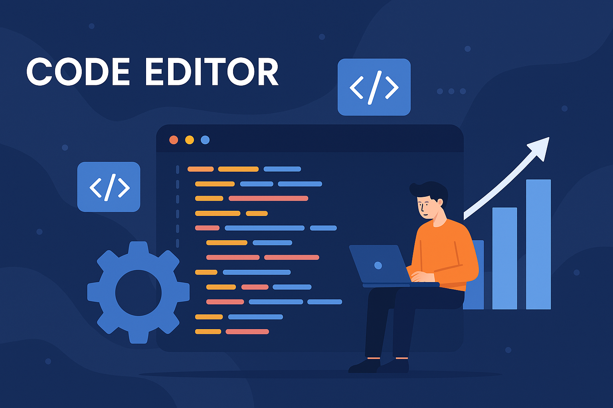

Projects
Code Editor
This project represents the initial milestone in my web development journey. It's a code editor interface designed and implemented using fundamental front-end technologies: HTML, CSS, and JavaScript. The goal was to create a clean, responsive, and user-friendly layout that reflects modern development environments. As one of the first projects in my portfolio, it demonstrates my foundational skills in structuring interactive content, applying responsive design principles, and enhancing usability with dynamic behavior.

🛒 Project Overview: AyLo Store – Smart Digital Services
AyLo Store represents my first initiative in building a full-featured e-commerce platform, which I entirely designed and developed using front-end technologies. The store currently offers a suite of software, office, and technology services, reflecting a modern, practical, and tech-savvy identity. Please note that the website is still under active development, and every aspect of the platform—from layout and responsiveness to functionality and branding—was crafted using HTML, CSS, and JavaScript. This project not only highlights my hands-on expertise in UI/UX design and web development but also showcases my ability to translate technical concepts into smooth user experiences tailored for service-based businesses.
.png)
🧾 Project Overview: Interactive Resume Page
This interactive résumé page is part of my personal portfolio website, designed to present my professional journey, skills, and experience with elegance and clarity. The project was built using HTML, CSS, JavaScript, and PHP, ensuring a smooth, responsive interface and seamless backend functionality. One of the key features is a fully operational Contact section, powered by an API integration that delivers messages directly to my Telegram inbox. All sensitive files are securely handled through PHP, enabling a secure and scalable structure that protects user data and system integrity. This page not only reflects my front-end abilities, but also showcases my growing backend knowledge and focus on security and real-time connectivity.